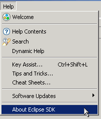
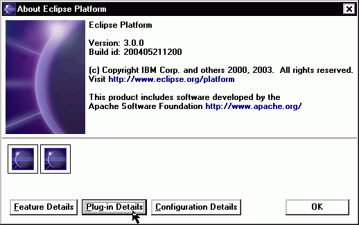

Last updated: May 21, 2008
This tutorial provides a step-by-step description for creating an EMF model from an XML Schema and then generating a simple model editor for it. Following this tutorial will show how easy EMF makes it to go from a simple model definition in an XML Schema to a fully functioning editor for that model.
The screenshots are based on version 3.2.0 RC6 of the Eclipse SDK and version 2.2.0 RC6a of EMF.
The XML Schema file we use in this tutorial can be found here: library.xsd. Save it somewhere on your workstation for later use.
The basic mapping rules from XML Schema to Ecore are:
From a modeling perspective, XML Schema is not as expressive as Ecore. It can neither specify the type of a reference target nor define bidirectional references (though EMF provides its own way to overcome these limitations).
| Step 0: | Prerequisites |
| Step 1: | Import the Model from XML Schema |
| Step 2: | Generate the EMF Model Code |
| Step 3: | Generate an Editor for the Model |
| Step 4: | Run the Generated Editor |
This tutorial requires both the EMF Runtime package, which includes the EMF generator and related plug-ins, and the XML Schema Definition (XSD) Runtime package. This latter package provides an EMF model of XML Schema, which EMF relies on for reading schemas. For simplicity, a combined EMF and XSD SDK package is available. After installing the package(s), verify that they are available in your Eclipse environment:
Additional EMF and XSD plug-ins, which are not highlighted above, are not required for this tutorial. They may or may not appear, depending on which packages you installed.
Create a new EMF project in the workspace:

The generator model shows a root object, representing the whole model. This model object has children that represent its packages, whose children then represent classifiers (classes and datatypes, including enumerated types). The children of classes are class attributes, references, and operations; the children of enumerated types are enum literals.
In most cases, the properites need not be changed from their default values, but these options can provide a great deal of control over the code that gets generated. For now, select several different generator model objects, and observe their properties.
The generator model is also the place where you initiate the code generation. By right-clicking on an object in the model, you can generate code for it.
After generation, the class interfaces and enum class will have been created, and a new pair of interfaces will have been created for the package itself and for the factory. There will also be two new packages, with "impl" and "util" suffixes, which contain implementations of the interfaces and additional utility classes, and both types of manifest files for the model plug-in: "plugin.xml" and "MANIFEST.MF".
If you change the model, you can regenerate it, and changes will be merged with any hand modifications that may have been made to the code. You can also selectively generate a subset of the model code by right-clicking on a package, class, or enum object and selecting "Generate Model Code" from the pop-up menu.
A fully functional Eclipse editor can also be generated for any model. By default, it is split between two plug-ins: an "edit" plug-in includes adapters that provide a structured view and perform command-based editing of the model objects; an "editor" plug-in provides the UI for the editor and wizard.
In general, if you wish to generate the model, edit, and editor plug-ins in a single step, you can do so by selecting "Generate All" from the pop-up menu. This will also create a tests plug-in, containing generated JUnit test code.
The code should be compiled automatically as it is generated, and should recompile whenever it is changed. If you have disabled automatic building in the workbench preferences, you can initiate compilation manually:
In order to test the new plug-ins, a second instance of Eclipse must be launched. The plug-ins will run in this workbench.
The Library Model wizard can now be used to create a new instance of the model.
The root object in this editor corresponds to the My.library resource. Under it lies a single library, the object which was selected as the model object in the wizard.

<?xml version="1.0" encoding="UTF-8"?>
<library:Library xmlns:library="http://www.example.eclipse.org/Library">
<name>Skills Center</name>
<writers>
<name>JRR Tolkien</name>
<books>#//@books.0</books>
</writers>
<books>
<title>Fellowship of the Ring</title>
<pages>324</pages>
<category>ScienceFiction</category>
<author>#//@writers.0</author>
</books>
</library:Library>